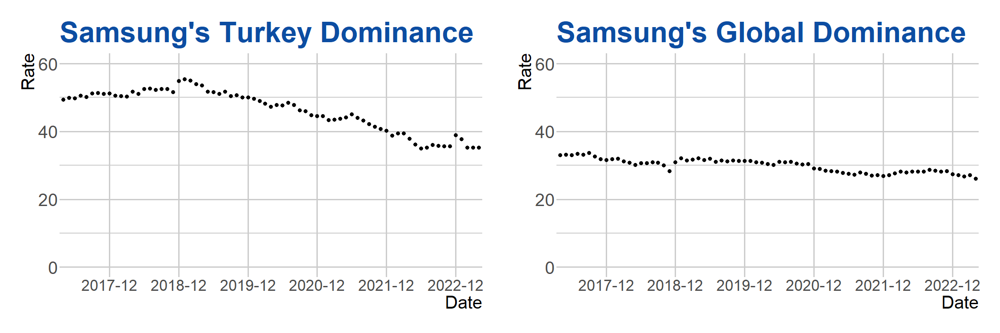

library(readr) # For data reading operations
library(readxl) # For reading Excel files
library(utf8) # For UTF-8 text processing
library(ggplot2) # For data visualization
library(tidyverse) # For data manipulation and visualization
library(hrbrthemes) # Additional themes and theme components for ggplot2
library(ggthemes) # Additional themes and color palettes for ggplot2
library(patchwork) # For combining ggplot2 graphics
library(tidyr) # For data cleaning
library(openxlsx) # For reading and writing Excel files
library(lubridate) # For date and time operationsdata
Libraries
In this section, we have loaded the libraries required for our project. The function of each library is specified below:
Global Market
Data Loading and Processing
In this section, we loaded the datasets required for our project and processed the date information. The function of each code block is specified below:
# We read the 'new_data.xlsx' file to create the 'new_data' data frame.
new_data <- read_excel("new_data.xlsx")
head(new_data)# A tibble: 6 × 3
Date Brand Rate
<chr> <chr> <dbl>
1 2017-04 Samsung 33.0
2 2017-05 Samsung 33.2
3 2017-06 Samsung 33.1
4 2017-07 Samsung 33.4
5 2017-08 Samsung 33.1
6 2017-09 Samsung 33.7# We separated the 'Date' column into 'Year' and 'Month' columns.
new_data_sep_year <- new_data %>% separate(Date, c("Year","Month"), "-", remove = FALSE)
head(new_data_sep_year)# A tibble: 6 × 5
Date Year Month Brand Rate
<chr> <chr> <chr> <chr> <dbl>
1 2017-04 2017 04 Samsung 33.0
2 2017-05 2017 05 Samsung 33.2
3 2017-06 2017 06 Samsung 33.1
4 2017-07 2017 07 Samsung 33.4
5 2017-08 2017 08 Samsung 33.1
6 2017-09 2017 09 Samsung 33.7# We converted the dates in the 'Date' column to the year-month format.
new_data_sep_year$Date <- ym(new_data_sep_year$Date)
head(new_data_sep_year)# A tibble: 6 × 5
Date Year Month Brand Rate
<date> <chr> <chr> <chr> <dbl>
1 2017-04-01 2017 04 Samsung 33.0
2 2017-05-01 2017 05 Samsung 33.2
3 2017-06-01 2017 06 Samsung 33.1
4 2017-07-01 2017 07 Samsung 33.4
5 2017-08-01 2017 08 Samsung 33.1
6 2017-09-01 2017 09 Samsung 33.7Data Separation by Brand
In this section, we created separate data frames for each brand in our ‘new_data_sep_year’ data frame. This allows us to perform individual analyses for each brand. The code provided below is specific to Samsung, Apple, and Xiaomi. The same structure has been implemented for all other brands as well.
# Creating a data frame for the Samsung brand
data_samsung <- new_data_sep_year %>% filter(Brand == "Samsung")
head(data_samsung)# A tibble: 6 × 5
Date Year Month Brand Rate
<date> <chr> <chr> <chr> <dbl>
1 2017-04-01 2017 04 Samsung 33.0
2 2017-05-01 2017 05 Samsung 33.2
3 2017-06-01 2017 06 Samsung 33.1
4 2017-07-01 2017 07 Samsung 33.4
5 2017-08-01 2017 08 Samsung 33.1
6 2017-09-01 2017 09 Samsung 33.7#Creating data frames for the other brads
data_xiaomi <- new_data_sep_year %>% filter(Brand == "Xiaomi")
data_apple <- new_data_sep_year %>% filter(Brand == "Apple")
data_huawei <- new_data_sep_year %>% filter(Brand == "Huawei")
data_oppo <- new_data_sep_year %>% filter(Brand == "Oppo")
data_unknown <- new_data_sep_year %>% filter(Brand == "Unknown")
data_lg <- new_data_sep_year %>% filter(Brand == "LG")
data_vivo <- new_data_sep_year %>% filter(Brand == "Vivo")
data_nokia <- new_data_sep_year %>% filter(Brand == "Nokia")
data_realme <- new_data_sep_year %>% filter(Brand == "Realme")
data_sony <- new_data_sep_year %>% filter(Brand == "Sony")
data_oneplus <- new_data_sep_year %>% filter(Brand == "OnePlus")
data_htc <- new_data_sep_year %>% filter(Brand == "HTC")
data_other <- new_data_sep_year %>% filter(Brand == "Other")
data_tecno <- new_data_sep_year %>% filter(Brand == "Tecno")Global Market Dominance Graphs
Ex: Samsung’s Global Dominance Graph
In this section, we created a graph using the dates and rates from our ‘data_samsung’ data frame. This graph illustrates Samsung’s global dominance. The code structure used in this example has been repeated for all other brands as well.
glob_samsung_plot <- data_samsung %>% ggplot(aes(Date, Rate)) +
geom_point(color = "black", size = 3) + # Plotting points in black color with size 3
theme_ipsum() + # Using the 'ipsum' theme
scale_y_continuous(limits = c(0, 60)) + # Setting limits for the y-axis as 0 to 60
ggtitle("Samsung's Global Dominance") + # Setting the title of the graph
scale_x_date(date_labels = "20%y-%m", date_breaks = "12 months") + # Displaying dates on the x-axis in year-month format
theme(axis.text.x = element_text(size = 26)) + # Setting the size of text on the x-axis
theme(axis.text.y = element_text(size = 29)) + # Setting the size of text on the y-axis
theme(plot.title = element_text(color = "#0c4da2", size = 48)) + # Setting the color and size of the title text
theme(axis.title.x = element_text(size = 30)) + # Setting the size of the x-axis title
theme(axis.title.y = element_text(size = 30)) + # Setting the size of the y-axis title
theme(panel.grid.major = element_line(size = 1.25), # Setting the thickness of major grid lines
panel.grid.minor = element_line(size = 1.00)) # Setting the thickness of minor grid lines
print(glob_samsung_plot)/Rplot-global-samsung.png)
Turkish Market
In this section, we loaded the necessary datasets for the Turkish market and processed the date information. The function of each code block is specified below:
# Reading the 'new_data_tr.xlsx' file to create the 'new_data_tr' data frame.
new_data_tr <- read_excel("new_data_tr.xlsx")
head(new_data_tr)# A tibble: 6 × 3
Date Brand Rate
<chr> <chr> <dbl>
1 2017-04 Samsung 49.4
2 2017-05 Samsung 49.9
3 2017-06 Samsung 49.8
4 2017-07 Samsung 50.5
5 2017-08 Samsung 50.2
6 2017-09 Samsung 51.3# Separating the 'Date' column into 'Year' and 'Month' columns.
new_data_sep_year_tr <- new_data_tr %>% separate(Date, c("Year","Month"), "-", remove = FALSE)
head(new_data_sep_year_tr)# A tibble: 6 × 5
Date Year Month Brand Rate
<chr> <chr> <chr> <chr> <dbl>
1 2017-04 2017 04 Samsung 49.4
2 2017-05 2017 05 Samsung 49.9
3 2017-06 2017 06 Samsung 49.8
4 2017-07 2017 07 Samsung 50.5
5 2017-08 2017 08 Samsung 50.2
6 2017-09 2017 09 Samsung 51.3# Converting the dates in the 'Date' column to the year-month format.
new_data_sep_year_tr$Date <- ym(new_data_sep_year_tr$Date)
head(new_data_sep_year_tr$Date)[1] "2017-04-01" "2017-05-01" "2017-06-01" "2017-07-01" "2017-08-01"
[6] "2017-09-01"Data Separation by Brand
In this section, we created separate data frames for each brand in our ‘new_data_sep_year_tr’ data frame. This allows us to perform distinct analyses for each brand in the Turkish market. The code provided below is specific to Samsung, Apple, and Xiaomi. The same structure has been implemented for all other brands as well.
# Creating a data frame for the Samsung brand in the Turkish market
data_samsung_tr <- new_data_sep_year_tr %>% filter(Brand == "Samsung")
head(data_samsung_tr)# A tibble: 6 × 5
Date Year Month Brand Rate
<date> <chr> <chr> <chr> <dbl>
1 2017-04-01 2017 04 Samsung 49.4
2 2017-05-01 2017 05 Samsung 49.9
3 2017-06-01 2017 06 Samsung 49.8
4 2017-07-01 2017 07 Samsung 50.5
5 2017-08-01 2017 08 Samsung 50.2
6 2017-09-01 2017 09 Samsung 51.3# Creating data frames for other brands
data_apple_tr <- new_data_sep_year_tr %>% filter(Brand == "Apple")
data_xiaomi_tr <- new_data_sep_year_tr %>% filter(Brand == "Xiaomi")
data_huawei_tr <- new_data_sep_year_tr %>% filter(Brand == "Huawei")
data_oppo_tr <- new_data_sep_year_tr %>% filter(Brand == "Oppo")
data_unknown_tr <- new_data_sep_year_tr %>% filter(Brand == "Unknown")
data_motorola_tr <- new_data_sep_year_tr %>% filter(Brand == "Motorola")
data_lg_tr <- new_data_sep_year_tr %>% filter(Brand == "LG")
data_lenovo_tr <- new_data_sep_year_tr %>% filter(Brand == "Lenovo")
data_vivo_tr <- new_data_sep_year_tr %>% filter(Brand == "Vivo")
data_nokia_tr <- new_data_sep_year_tr %>% filter(Brand == "Nokia")
data_realme_tr <- new_data_sep_year_tr %>% filter(Brand == "Realme")
data_sony_tr <- new_data_sep_year_tr %>% filter(Brand == "Sony")
data_asus_tr <- new_data_sep_year_tr %>% filter(Brand == "Asus")
data_oneplus_tr <- new_data_sep_year_tr %>% filter(Brand == "OnePlus")
data_htc_tr <- new_data_sep_year_tr %>% filter(Brand == "HTC")
data_google_tr <- new_data_sep_year_tr %>% filter(Brand == "Google")
data_other_tr <- new_data_sep_year_tr %>% filter(Brand == "Other")
data_tecno_tr <- new_data_sep_year_tr %>% filter(Brand == "Tecno")Turkey’s Market Dominance Graphs
Ex: Samsung’s Turkey Dominance Graph
In this section, we created a graph using the ‘data_samsung_tr’ data frame, showcasing the date and rates. This graph illustrates Samsung’s dominance in the Turkish market. The code structure used in this example has been repeated for all other brands as well.
tr_samsung_plot <- data_samsung_tr %>% ggplot(aes(Date, Rate)) +
geom_point(color = "black", size = 3) + # Plotting points in black color with a size of 3
theme_ipsum() + # Using the 'ipsum' theme
scale_y_continuous(limits = c(0, 60)) + # Setting the limits of the y-axis to 0 and 60
ggtitle("Samsung's Turkey Dominance") + # Setting the title of the graph
scale_x_date(date_labels = "20%y-%m", date_breaks = "12 months") + # Displaying dates on the x-axis in year-month format
theme(axis.text.x = element_text(size = 26)) + # Setting the size of text on the x-axis
theme(axis.text.y = element_text(size = 29)) + # Setting the size of text on the y-axis
theme(axis.title.x = element_text(size = 30)) + # Setting the size of the x-axis title
theme(axis.title.y = element_text(size = 30)) + # Setting the size of the y-axis title
theme(plot.title = element_text(color = "#0c4da2", size = 48)) + # Setting the color and size of the title text
theme(panel.grid.major = element_line(size = 1.25), # Setting the thickness of major grid lines
panel.grid.minor = element_line(size = 1.00)) # Setting the thickness of minor grid lines
print(tr_samsung_plot)Comparisons
Combining Graphs to Compare Samsung’s Performance in Global and Turkish Markets
In this section, we combine two graphs to compare Samsung’s performance in both the global and Turkish markets. The same structure has been implemented for all other brands as well.
# Combining the graphs for Samsung's dominance in global and Turkish markets
samsung_compare_globtr <- tr_samsung_plot + glob_samsung_plot
print(samsung_compare_globtr)
# Combining the graphs for Apple's dominance in global and Turkish markets
# apple_compare_globtr <- tr_apple_plot + glob_apple_plot
# print(apple_compare_globtr)# Combining the graphs for Xiaomi's dominance in global and Turkish markets
# xiaomi_compare_globtr <- tr_xiaomi_plot + glob_xiaomi_plot
# print(xiaomi_compare_globtr)
Creating a Comparison Graph for Multiple Brands in the Global Market
In this section, we use ggplot to create a line graph that compares the performance of multiple brands (Samsung, Apple, Xiaomi, Huawei, Oppo) in the global market. The similar structure was used for the other two graphs, which involve 10 brands and 15 brands, respectively.
# ggplot ile grafik oluşturma
compare_glob_five <- ggplot() +
geom_line(data = data_samsung, aes(x = Date, y = Rate, color = "Samsung"), size = 2) + # Drawing a line for Samsung
geom_line(data = data_apple, aes(x = Date, y = Rate, color = "Apple"), size = 2) + # Drawing a line for Apple
geom_line(data = data_xiaomi, aes(x = Date, y = Rate, color = "Xiaomi"), size = 2) + # Drawing a line for Xiaomi
geom_line(data = data_huawei, aes(x = Date, y = Rate, color = "Huawei"), size = 2) + # Drawing a line for Huawei
geom_line(data = data_oppo, aes(x = Date, y = Rate,
color = "Oppo"), size = 2) + # Drawing a line for Oppo
scale_x_date(date_labels = "20%y-%m", date_breaks = "12 months") + # Displaying date labels on the X-axis in year-month format
theme_ipsum() + # Using the 'ipsum' theme
scale_color_manual(values = c("Samsung" = "blue", "Apple" = "red", # Setting colors for each brand's line
"Xiaomi" = "green",
"Huawei" = "yellow",
"Oppo" = "purple")) +
labs(title = "Brands", color = "Brand") + # Setting titles and color labels
ggtitle("Global Market Percentages") + # Setting the graph title
theme(legend.text = element_text(size = 20)) + # Setting the legend text size
theme(axis.text.x = element_text(size = 26)) + # Setting the X-axis text size
theme(axis.text.y = element_text(size = 29)) + # Setting the Y-axis text size
theme(plot.title = element_text(color = "#0c4da2", size = 48)) + # Setting the title text color and size
theme(axis.title.x = element_text(size = 30)) + # Setting the X-axis title size
theme(axis.title.y = element_text(size = 30)) + # Setting the Y-axis title size
theme(panel.grid.major = element_line(size = 1.25), # Setting the major grid line thickness
panel.grid.minor = element_line(size = 1)) # Setting the minor grid line thickness
print(compare_glob_five)Creating a Comparison Graph for Multiple Brands in the Turkey Market
In this section, we use ggplot to create a line graph that compares the performance of multiple brands (Samsung, Apple, Xiaomi, Huawei, Oppo) in the Turkey market. The similar structure was used for the other two graphs, which involve 10 brands and 15 brands, respectively.
compare_tr_five <- ggplot() +
geom_line(data = data_samsung_tr, aes(x = Date, y = Rate, color = "Samsung"), size = 2) + # Drawing a line for Samsung
geom_line(data = data_apple_tr, aes(x = Date, y = Rate, color = "Apple"), size = 2) + # Drawing a line for Apple
geom_line(data = data_xiaomi_tr, aes(x = Date, y = Rate, color = "Xiaomi"), size = 2) + # Drawing a line for Xiaomi
geom_line(data = data_huawei_tr, aes(x = Date, y = Rate, color = "Huawei"), size = 2) + # Drawing a line for Huawei
geom_line(data = data_oppo_tr, aes(x = Date, y = Rate,
color = "Oppo"), size = 2) + # Drawing a line for Oppo
scale_x_date(date_labels = "20%y-%m", date_breaks = "12 months") + # Displaying date labels on the X-axis in year-month format
theme_ipsum() + # Using the 'ipsum' theme
scale_color_manual(values = c("Samsung" = "blue", "Apple" = "red", # Setting colors for each brand's line
"Xiaomi" = "green",
"Huawei" = "yellow",
"Oppo" = "purple")) +
labs(title = "Brands", color = "Brand") + # Setting titles and color labels
ggtitle("Turkey Market Percentages") + # Setting the graph title
theme(legend.text = element_text(size = 20)) + # Setting the legend text size
theme(axis.text.x = element_text(size = 26)) + # Setting the X-axis text size
theme(axis.text.y = element_text(size = 29)) + # Setting the Y-axis text size
theme(plot.title = element_text(color = "#0c4da2", size = 48)) + # Setting the title text color and size
theme(axis.title.x = element_text(size = 30)) + # Setting the X-axis title size
theme(axis.title.y = element_text(size = 30)) + # Setting the Y-axis title size
theme(panel.grid.major = element_line(size = 1.25), # Setting the major grid line thickness
panel.grid.minor = element_line(size = 1)) # Setting the minor grid line thickness
print(compare_tr_five)